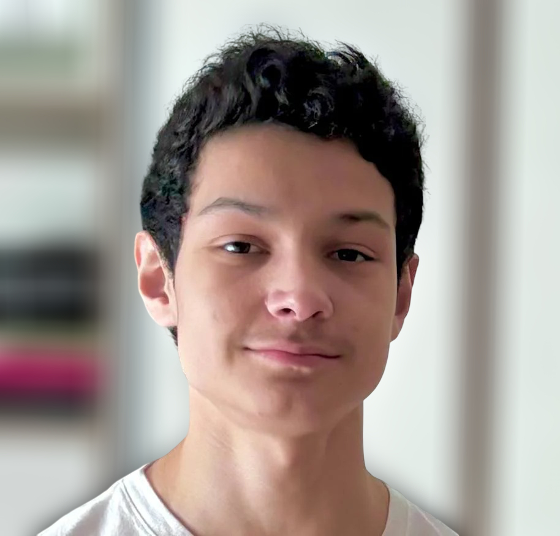

Rafael Gonçalves Rocha
Gameplay Programmer • Unity Developer • Game Systems
Meu nome é Rafael e tenho como objetivo aprofundar e expandir meus conhecimentos na área de programação de jogos digitais, na qual possuo experiência e grande entusiasmo em atuar. Ao longo da minha trajetória, venho desenvolvendo minha capacidade de trabalhar em equipe, aprendendo a equilibrar a resolução de problemas com a colaboração e a troca de ideias. Hoje, valorizo o trabalho coletivo como parte essencial para alcançar melhores resultados. Mantenho-me sempre empenhado em atingir os objetivos propostos e prezo pela organização, pontualidade, respeito e harmonia em ambientes colaborativos.
Dados pessoais
Ver dados pessoais
- Nome completo: Rafael Gonçalves Rocha
- Data de nascimento: 23/02/2009
- Email: rafilskerocha@gmail.com
- Telefone: +55 (41) 99866-8763
Formação acadêmica
Ensino Médio
- Instituto Federal de Educação, Ciência e Tecnologia do Paraná - Campus Curitiba
- Curso Técnico Integrado ao Ensino Médio Programação de Jogos Digitais (com duração de 4 anos)
- Entrada: Março/2023 – em andamento
Ensino Fundamental II
- Instituto de Educação do Paraná Professor Erasmo Pilotto
- Entrada: Fevereiro/2019
- Saída: Dezembro/2022
Conhecimentos técnicos
Ver conhecimentos técnicos
- C# – scripts e mecânicas de gameplay
- Unity – desenvolvimento 2D e 3D
- FMOD – integração de áudio em jogos
- C++ – lógica de programação e fundamentos
- HTML5 / CSS3 / JS – desenvolvimento de jogos e interfaces web
Experiência
Jogo eletrônico web 2D denominado “Embate (Combat)” desenvolvido em HTML5 Canvas, CSS e JavaScript (2026)
Releitura jogável do clássico Combat (Atari 2600) para navegador, contando com modo multiplayer local para dois jogadores no mesmo teclado, três mapas gerados aleatoriamente, sistema de ricochete de projéteis, efeitos sonoros e power-up temporário de tiro triplo. Jogar no navegador →
Jogo eletrônico 2D side view denominado “Shotgun” produzido na Unity de forma individual (2024)
O jogo se passa na pele de uma escopeta autônoma controlada pelo jogador, o qual tem 10 diferentes objetivos a cumprir em um certo limite de tempo enquanto controla a arma. No geral, o projeto é simples e de curta duração, considerando-se que foi desenvolvido em um período de 3 dias e por apenas uma pessoa. Apesar disso, o jogo não contém sons, nem menu, por ter como finalidade exclusiva a apresentação de uma gameplay no âmbito 2D.
Jogo eletrônico 3D em primeira pessoa denominado “Lanchinho Noturno” produzido na Unity de forma individual (2025)
O jogo é um walking simulator em primeira pessoa, ou seja, se baseia na exploração pré-definida de um cenário que, nesse caso, é de um posto de gasolina abandonado. Por conseguinte, contém elementos de terror e uma curta duração de gameplay. Além disso, foi integralmente desenvolvido por apenas uma pessoa e teve como objetivo o uso de 3D na Unity, junto da integração sonora com o FMOD e um menu funcional.
Jogo eletrônico 3D em primeira pessoa denominado “Projeto T.E.M.P.O” produzido na Unity em grupo (2025)
O jogo se baseia em uma escape room contida em um escritório, em uma realidade em que a viagem temporal é possível, por isso o jogador alterna entre dois períodos para resolver os enigmas e escapar da sala. O projeto foi desenvolvido em um time de 3 pessoas ao longo de aproximadamente 3 meses, em que foi me dada a função de programador do menu, integração sonora, e o desenvolvimento de diversas mecânicas principais e do primeiro enigma completo. O jogo é completo, ou seja, possui começo, meio e fim bem definidos e uma estrutura comum à outros jogos, como menu, configurações, menu de pausa, efeitos visuais, sons, etc.
Jogo eletrônico 3D para bolsa CNPq relacionado com a Olimpíada Paranaense de Química produzido na Unity desenvolvido em grupo (2024-2025)
O jogo foi desenvolvido em um espaço de tempo de cerca de 10 meses em um time inicialmente de uma pessoa, mas que mudou para 2 pessoas após poucos meses do início do projeto e logo 3 pessoas na segunda metade do período de desenvolvimento. A proposta se baseia em um jogo educativo de química para aqueles que desejam participar da OPRQ (Olimpíada Paranaense de Química), por isso possui um nicho específico e uma dificuldade acima da média em relação ao nível de conhecimento necessário para jogá-lo. Como parte do desenvolvimento, tive a responsabilidade de programar as mecânicas fundamentais do jogo, ou seja, a jogabilidade principal.
Jogo eletrônico 2D denominado “Canções do Havaí” produzido na Unity em grupo (2026)
O jogo teve como finalidade apresentar uma proposta educacional para o Trabalho de Conclusão de Curso do curso técnico integrado ao ensino médio de Programação de Jogos Digitais IFPR. Sendo assim, sua temática se baseia na exploração de um cenário de extinção da espécie de um pássaro de uma das ilhas que compõem o Arquipélago do Havaí. A divisão de funções para o projeto foi com base nos 6 membros envolvidos, em que eu fui classificado como o sonorizador do jogo, portanto tive que atuar na área de música e sons.
Habilidades
Ver habilidades
- Proatividade em relação às responsabilidades impostas
- Organização
- Comunicação integrada ao trabalho em equipe
- Autoconsciência/metacognição
- Criatividade na solução de problemas
Idiomas
Ver idiomas
- Português – Fala e escrita fluentes
- Inglês – Fala e escrita fluentes